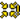

Operando Vehículos
Informaciones Generales Sobre Vehículos
- Los vehículos ligeros, camiones, lanchas y Jeeps (Excepto los blindados ligeros) pueden ser operados por cualquier Soldado. Vehículos Blindados, Helicópteros y Aeronaves necesitan un Kit específico para operarlos. Jugadores no usando el kit correcto no podrán usar el vehículo y armamento. No puedes entrar o usar Vehículos enemigos. Para vehículos Terrestres necesitaras el kit de Conductor. Para los Aviones y Helicópteros necesitaras el Kit de Piloto. Estos son solicitados desde un vehículo o de los suministros.
- La vista exterior de los vehículos fueron removidos. Pero en ciertos Vehículos encontraran cámaras personalizadas como en los Camiones, puedes mirar atrás de ellos (C).
- Puedes apuntar con la mirilla de un MG estático o de un vehículo con una MG en el, con tal de apretar la letra (C).
- Armas automáticas montadas en los vehículos suelen tener calentamiento excesivo. Mira el elemento calentamiento-HUD abajo a la derecha.
- MGs montadas a vehículos usan cinturones de municiones. Se los recarga automáticamente pero están limitadas en número.
- Vehículos pueden ser reabastecidos y reparados en el depósito de suministros. O usen la herramienta de reparar que despliega los camiones de Logística. Aviones y Helicópteros se reparar automáticamente y se rearman en su lugar de Spawn.
- Insurgentes tienen vehículos bomba suicida como un camión basurero naranja o en autos civiles pequeños con C4 en ellos. Puedes detonarlos haciendo click con el fuego alternativo.
- Cuando sales de un auto en movimiento, te harás daño dependiendo la velocidad. Serás herido severamente si te sales de un auto prendido en fuego.
- Cuando los vehículos sufren mucho daño, podrían ser incapaz de moverse o mover la torreta hasta que hayan sido totalmente reparados.
- Vehículos que disparan misiles guiados deben estar estacionarios por 7 segundos antes de que puedan disparar su arma.
- Seleccionando otro armamento del vehículo, ocasionara un retraso antes de que puedas disparar.
- Puedes pulsar Ctrl izquierdo + mover el Mouse para una vista libre dentro del vehículo como helicópteros, aviones, jeeps, botes y camiones. APCs, IFVs y Tanques no tiene esa característica por usar cámaras dedicadas.
- En los servidores públicos (no en los modos de juego locales), puede cambiar rápidamente al siguiente asiento libre disponible en un vehículo presionando F8.
- Cuando esté en un vehículo, puede ver la información sobre los asientos ocupados en la parte inferior izquierda del HUD. Muestra solo los asientos importantes de la tripulación como marcadores cuadrados. Esto incluye las posiciones de conductor y artillero. Los asientos de los pasajeros no tienen dichos marcadores y se muestran como un contador separado.
Vehículos Blindados
- Los tanques y los IFV tienen asientos separados para el conductor y el artillero. Para utilizar el puesto de artillero debe estar presente un conductor o un artillero de la torreta. Después de cambiar al asiento del artillero, debes esperar 30 segundos antes de poder apuntar el cañón..
- El conductor y el artillero de un vehículo deben estar en el mismo escuadrón.
- Los conductores de tanques y ciertos APC/IFV tienen un modo de vista de comandante que proporciona una vista de 360° alrededor de la torreta. Se puede acceder presionando (2).
- Conductores y artilleros pueden hacer zoom presionando la letra (X). Algunos conductores de tanques deben cambiar su posición a la del comandante.
- La mayoría de los tanques e IFV pueden usar óptica térmica además de sus vistas normales. Puede cambiar al modo térmico usando el menú de radio secundario (T) y seleccionando “DAY / THERMAL”. Algunos también le permitirán cambiar entre variaciones térmicas como WHOT/BHOT.
{% figure "../assets/thermalz.png" %} Visión térmica. {% endfigure %}
- Vehículos blindados no tienen sonidos de advertencia cuando son fijados por algún lanzacohetes o cuando misiles son disparados hacia ellos.
- Los vehículos blindados tienen materiales realistas. Esto significa que el blindaje frontal y de la torreta es más fuerte que el de la parte trasera y superior del vehículo. Los lados de los vehículos y las orugas suelen tener el término medio cuando se trata de la resistencia de la armadura.
- Tanques y IFVs usualmente tienen hasta 4 tipos de munición:
- Armor-piercing/Perforante (AP): Para atacar otros vehículos blindados.
- High Explosive/Alta Explosiva (HE) (Se carga presionando 2): Efectivo contra cosas suaves (jeeps, casas, helicópteros, infantería,)
- Misiles Anti-Tanques (Se carga presionando 3): Se lo usa contra blindados más fuertes.
- Co-axial MG (Para seleccionar esta arma presiona F): Se lo usa para la Infantería.
- Los conductores de tanques o artilleros (según el vehículo) y algunos otros vehículos pueden desplegar humo presionando la tecla de disparo alternativo.
En los tanques y APC/IFV los artilleros despliegan el humo seleccionando el espacio del arma (usualmente el 3) y presionan la tecla para disparar para lanzar una cortina de humo. (El artillero debe esperar 60 segundos para disparar nuevamente).
- Para algunos vehículos el Humo será Bloqueo-IR lo cual significa que también bloqueara la visión Termal al enemigo. Para otros (vehículos viejos) será posible ver a través del humo en visión térmica.
{% figure "../assets/vehiclesmoke.png" %} Humo Del Vehículo. {% endfigure %}
Helicopteros
- Los Helicópteros tienen un *proceso de encendido que dura 30 segundos. Si mucha potencia se genera cuando las aspas giran al iniciar la rotación, el piloto podría perder el control y chocar. Para encender el Helicóptero, no debes tocar el acelerador por al menos 30 segundos antes de intentar en levantarlo.
- El piloto del Helicóptero puede mirar otras direcciones mientras vuela apretando los números 6, 7, 8 y 9, lo cual también se lo puede modificar para un Joystick. Para mirar adelante nuevamente, se debe presionar el numero 1 o seleccionar cualquier otra arma que tu aeronave tenga.
- El control de los timones para virar a una dirección u otra, es efectivo a baja velocidad. En altas velocidades debes inclinar el Helicóptero para poder virar.
- Los jugadores que usen el kit de piloto no pueden ocupar ninguno de los asientos de pasajeros de un avión. Esto es para evitar que los jugadores usen el kit de piloto como una especie de kit de asalto de paracaidistas de SF porque tiene un paracaídas. Si ha tenido que abandonar su aeronave y luego recibir una recogida de otra aeronave, asegúrese de dejar caer su equipo de piloto antes de ingresar al asiento del pasajero de la aeronave; de lo contrario, se verá obligado a salir del helicóptero.
- El piloto de un Helicóptero de Ataque puede disparar misiles no guiados mientras que el artillero (Co-piloto) controla el Cañón y los misiles guiados.
- Los artilleros de los Helicópteros de Ataque pueden hacer zoom con la cámara de sus armas al de presionar la tecla (C) o presionando las teclas F9 al F11. También pueden cambiar a vista termal usando el menú de radio secundario (T) y seleccionando "Día / Termal" cambiando entre ambos.
- El artillero del Helicóptero de ataque tiene 4 modos diferentes para elegir:
- Vista de primera persona en la cabina.
- Gun-camera el cual controla el cañón del helicóptero
- El modo de disparo guiado (LG) permite un modo de orientación semimanual, donde puede hacer clic en el objetivo y el misil se guiará hacia él y hacer clic nuevamente para actualizar la ubicación de los objetivos al misil en vuelo .
- Modo de disparo dirigido por láser (LT) (dispara y olvida) bloquea el misil en un objetivo láser proporcionado por tropas terrestres o un helicóptero explorador. El modo dirigido por láser es la mejor opción si un observador puede designar el objetivo. Permite una exposición mínima del helicóptero. El modo guiado por láser permite el mejor seguimiento de objetivos en movimiento. Sin embargo, si el objetivo no ha sido "perezoso" correctamente o mal, o simplemente por alguna razón el misil no puede ver el objetivo después del lanzamiento, como si un edificio se interpusiera en el camino, el misil puede fallar.
- La tripulación del helicóptero deben estar en el mismo escuadrón.
- El helicóptero debe volver y aterrizar en el helipuerto para ser rearmado/reparado. En los portaviones solo puedes recargar en la “rampa” del portaaviones, fuera de la pista, esto no incluye a los elevadores.
- Para tirar los suministros de manera correcta de un helicóptero de transporte, el piloto debe de tener en cuenta de estar a una elevación de 5m /15 pies para que caiga correctamente, apretando la tecla de fuego alternativo.
- Las Bengalas están limitadas y necesitan ser rearmadas una vez usadas. Cada vez que presiones (X) un par de bengalas serán lanzadas. Mantén X para tirar muchas a la vez.
Aviones de Combate
- Las aeronaves tienen un proceso de calentamiento de 30 segundos antes de que puedan despegar.
- Los pilotos de Jet puede mirar otras direcciones mientras vuela apretando los números 6, 7, 8 y 9, lo cual también se lo puede modificar para un Joystick. Para mirar adelante nuevamente, se debe presionar el numero 1 o seleccionar cualquier otra arma que tu aeronave tiene.
- Para moverse despacio en la pista, mantén el acelerador en neutral y pulsa la flechita para arriba, para que se pueda mover despacio hacia una dirección. Pulsa la flechita para abajo para retroceder y/o frenar. Para girar izquierda o derecha usa las teclas (A & D).
- Su altitud máxima es de 10 km..
- Para despegar necesitas poner el acelerador al máximo y luego esperar un poco a que el avión comience a acelerar. Cuando haya estes llegando a 2/3 de la pista, comience a tirar suavemente de la palanca y tal vez agregue algo de postcombustión.
- La mayoría de las aeronaves están equipadas con cañones y varias armas externas. Usa tecla de disparo primaria para disparar el arma seleccionada.
- Para rearmar y reparar debes aterrizar y moverte hacia la “rampa o estacionamiento” o a veces en la pista solo en algunos mapas. Toma su tiempo en recargar y/o reparar. En los portaviones solo puedes recargar en la “rampa” del portaaviones, fuera de la pista, esto no incluye a los elevadores.
- La mayoría de los aviones cuentan con asientos eyectables cuando presionas (E). Desplegará automáticamente el paracaídas cuando esté por debajo de los 750 m.
- Misiles Aire-Tierra en una aeronave de un asiento necesita de un láser para alcanzar el objetivo. El procedimiento recomendado para este ataque esta explicado abajo:
- Las tropas de tierra encuentran un objetivo adecuado para un ataque aéreo.
- Las tropas contactan al piloto ya sea por Mumble/Chat y/o poniendo la marca CAS. 
- El piloto informa a las tropas terrestres de que está en camino usando el comando "en camino" de su Radio menú y/o por el texto o Mumble.
- Cuando el piloto se aproxime al objetivo, las tropas en tierra designaran con el Designador Laser GTLD, si el láser no llega al objetivo el misil/bomba se desviara.
- Cuando el objetivo haya sido fijado, el piloto recibirá un sonido diciendo “Locked-on”. Él ahora puede soltar la bomba/misil guiado hacia el objetivo.
- Aviones de 2 Pilotos Permite el uso de sistemas de arma oficial (WSO) para identificar y atacar objetivos por su cuenta propia usando el modo TV objetivo. El modo objetivo trabaja de la misma manera que los Helicópteros de Ataque.
- El comandante puede poner un objetivo láser desde su mapa. Aunque este método no es muy preciso debe ser solo usado para objetivos para bombas.
- Las aeronaves no tienen cámara en la nariz, pero puedes mirar para atrás presionando la tecla (C) o F11, y con F9 o cualquier otra tecla para cambiar de armas para mirar adelante.
- Bengalas son lanzadas individualmente presionando la tecla (X) y deben ser rearmadas una vez que hayas usado todas. El sonido de advertencia es solo producido si un enemigo te tiene fijado a tu aeronave por medio segundo. Es recomendado usar las Bengalas mientras estás en ataque para reducir las posibilidades del enemigo de fijarte y dispararte. Tal como en los helicópteros, puedes mantener la tecla “X” para lanzar muchos a la vez.
- Para Aterrizar en PR: BF2 debes tener un plan de aproximación mucho más concentrado que en BF2. Aquí tienes unos consejos en cómo hacer tu primer aterrizaje fácilmente:
- Necesitas reducir tu velocidad por adelantado hasta que puedas mantenerte nivelado sin caerte del cielo (alrededor del 40 % de potencia) siendo la velocidad aerodinámica de entrada en pérdida diferente para cada avión. (Usted mismo puede encontrar la velocidad de pérdida de su aeronave subiendo alto y reduciendo la velocidad de su aeronave hasta que comience a perder el control y a caer, pero si lo hace alto significará que puede recuperar el control abriendo el acelerador y apuntando su nariz hacia abajo, luego manténgase por encima de esa velocidad de pérdida mientras aterriza, hasta que sus ruedas toquen el suelo.)
- Cuando tengas la velocidad correcta puedes empezar a hacer la aproximación.
- Imagina un punto en el mapa extendiendo la pista por 1 km.
- Vuela hasta ese punto y vira en dirección hacia la pista.
- Cuando estés a 200 metros de la pista, corta la potencia planeando hacia la pista.
- Una vez que haya tocado el suelo, tire hacia atrás de la palanca para reducir la velocidad, todos los aviones se comportan diferentes.
Sistema de Control de Tiro
Los vehículos en Project Reality usan un auténtico sistema balístico para proyectiles de vehículos. Dependiendo del vehículo, el artillero puede usar varias variaciones de computadoras de sistemas de control de incendios (FCS). En principio, el FCS puede calcular los ajustes necesarios para disparar al objetivo exactamente donde lo desea. La solución de disparo no solo considera la caída del proyectil debido a la gravedad, sino que también incluye la fricción que ralentiza los proyectiles. Además, puede tener en cuenta el desplazamiento entre la cámara del operador y el cañón, la diferencia de altura con respecto al objetivo, la inclinación del vehículo y la velocidad del vehículo. Al igual que sus contrapartes de la vida real, no todos los vehículos tendrán las mismas capacidades para su FCS. Esta sección profundizará en algunos de los casos de uso de nuestras implementaciones de FCS.
Vehículos Terrestres
- En resumen, existen 3 tipos de FCS para vehículos terrestres:
- Vista estática: debe confiar en las marcas de rango en la vista.
- Ajuste de la vista: la mira se mueve para mostrar dónde apuntar.
- Cañón de ajuste: el cañón se mueve para dar en el lugar al que apuntas.
- La vista del artillero del vehículo (la vista en el HUD) variará mucho de un vehículo a otro según sus especificaciones. Algunos vehículos, en su mayoría los de generación más antigua, pero sin limitarse a la edad, simplemente ofrecen una superposición de retícula con líneas que indican el punto de mira necesario para una distancia determinada. Las marcas en el visor en sí generalmente aclararán qué líneas se utilizarán específicamente para qué tipo de armamento. Luego, el artillero tiene que estimar correctamente el alcance al objetivo y ajustar el paso del arma para impactar.
- Otros vehículos vienen con la capacidad de configurar el cero de la mira del arma para indicar el punto de mira para el punto de impacto deseado. Al mantener presionada la tecla de la radio de comunicación (predeterminado: Q), el artillero puede marcar el rango deseado aumentando o restando el rango indicado. También puede restablecer el arma a la posición neutral, que se indica mediante la visualización de - - - - en el HUD como configuración de rango.
{% figure "../assets/fcs_manual.png" %} Uso del menú de la radio para cambiar manualmente el rango establecido. {% endfigure %}
- La configuración más sofisticada que se encuentra en la mayoría de los vehículos modernos viene con acceso a un FCS completamente automatizado, completo con un telémetro láser. Mostrarán el icono del láser como activo:

- Después de apuntar el punto de mira al objetivo deseado (distancia), los vehículos que lo tienen, el telémetro láser se puede usar con la tecla de cambio de cámara (predeterminado: C) que configurará el arma automáticamente para que se configure en la posición correcta para disparar a la mira central.
- En la parte inferior derecha del HUD se muestra el rango establecido actual y las capacidades disponibles de su vehículo.
{% figure "../assets/fcs_main.png" %} El rango establecido y los íconos de capacidad FCS se muestran en la parte inferior derecha del HUD. {% endfigure %}
- Los íconos en la vista del artillero en vehículos que usan un FCS muestran una cantidad de íconos en escala blanca o gris. Cada uno de estos iconos indica un cierto tipo de corrección de puntería que el FCS tendrá en cuenta al configurar el arma correctamente. Las correcciones tienen en cuenta las siguientes imprecisiones de puntería:
 Compensación de velocidad: Compensación del propio movimiento del vehículo. NO corrige la ventaja de un vehículo objetivo enemigo en movimiento.
Compensación de velocidad: Compensación del propio movimiento del vehículo. NO corrige la ventaja de un vehículo objetivo enemigo en movimiento. Compensación de altura: compensa la diferencia de altitud entre su vehículo y el objetivo.
Compensación de altura: compensa la diferencia de altitud entre su vehículo y el objetivo.- Compensación de paralaje: compensación del desajuste entre la posición del arma y la posición de la cámara del artillero.
 Compensación de balanceo: compensa el asiento del vehículo en ángulo.
Compensación de balanceo: compensa el asiento del vehículo en ángulo.- Al cambiar a la ametralladora coaxial, el ajuste de distancia configurara automaticamente la mira para disparar al centro. Lo mismo sucederá al cambiar a otros tipos de municiones. Para cambiar entre el arma principal y la ametralladora coaxial, use la tecla de cambio de arma (predeterminado: F).
- Aunque el modo de operación deseado es que el arma se configure automáticamente, el artillero también tiene la capacidad de marcar manualmente. Sin embargo, esto no corregirá los desajustes de puntería (ver más abajo). Si la distancia al objetivo es mayor que la físicamente alcanzable por el arma seleccionada, el HUD mostrará una letra roja de la configuración de rango actual o ^ ^ ^ ^ como indicación de error.
- Un pequeño número de vehículos utilizará un telémetro láser para recibir la distancia correcta al objetivo, pero en lugar de cambiar el arma para apuntar en el punto de mira central, la posición del punto de mira dentro del visor cambiará. Cambiar a la ametralladora coaxial u otros tipos de munición cambiará la posición de la mira automáticamente de nuevo. Al igual que arriba, también es posible marcar manualmente.
- Hay un período muy, muy breve después de aplicar el láser y el arma entra en la posición correcta. Si te apresuras, puedes terminar perdiéndote.
- El telémetro láser tiene un período de enfriamiento de aproximadamente un segundo entre usos, indicado por el icono que se vuelve rojo.
- No se puede utilizar para configurar el arma para distancias inferiores a 150 m. Lanzar a una distancia tan baja o hacia el horizonte hará que el arma vuelva a colocarse en una posición neutral, con el indicador de alcance mostrando v v v v.
-
El láser tiene un error de alrededor de ± 5m.
-
El juego memorizará el último ajuste del artillero, sin importar si lo dejó o murió en él.
- La fase de calentamiento del arma no impide que el tirador utilice el telémetro láser o la marcación manual del alcance.
- El FCS en vehículos SPAAA (artillería antiaérea autopropulsada) siempre está activo y no requiere ninguna entrada adicional por parte del jugador.
- Al tripular un SPAAA con equipo de radar, el FCS mostrará un círculo que indica la dirección correcta del objetivo después de adquirir un bloqueo en el objetivo. El avión enemigo puede desplegar bengalas para romper el bloqueo, lo que elimina el círculo de puntería temporalmente.
Aviones
El FCS no se limita a vehículos terrestres, los aviones de ala fija tienen sus propias versiones para soluciones de disparo (automatizado). Como tales, los aviones modernos utilizan el punto de impacto calculado constantemente (CCIP) que mostrará dónde impactara las bombas en el suelo. Además, los aviones de ataque a tierra también utilizarán CCIP para mostrar el impacto de su arma principal. Los aviones de combate que admitan la orientación por radar podrán bloquear aviones con sus armas para mostrar un marcador que prediga dónde apuntar y dar en el blanco. Este bloqueo de radar también activará los receptores de advertencia de radar de las víctimas y se puede contrarrestar con bengalas.